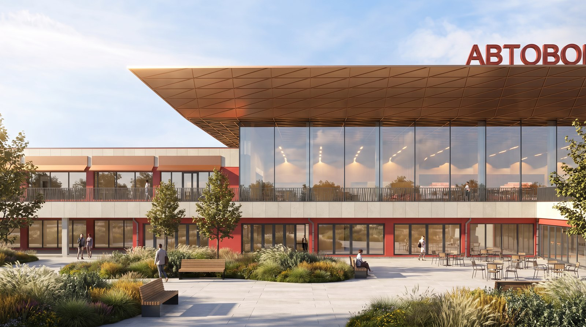
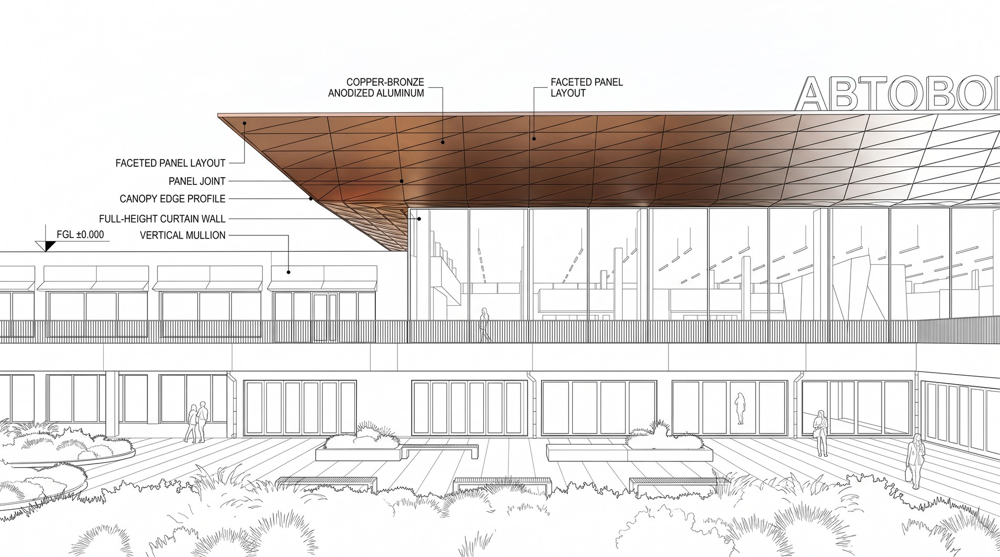
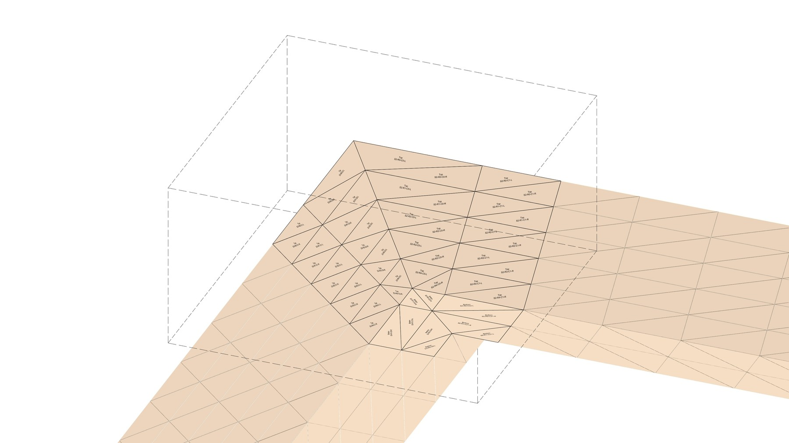
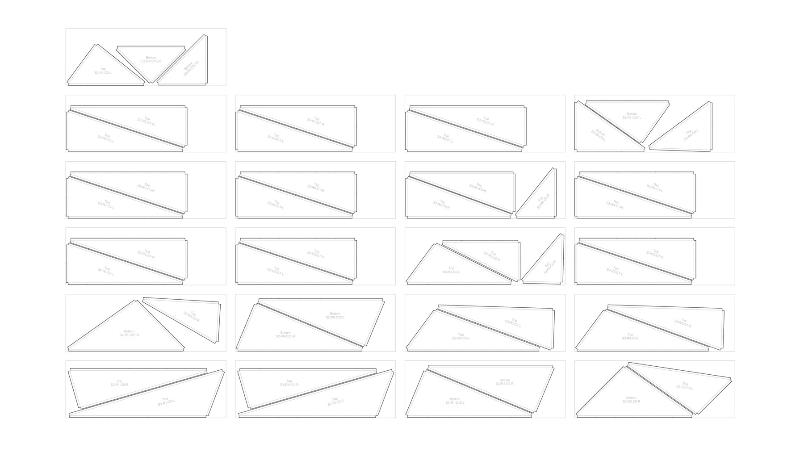
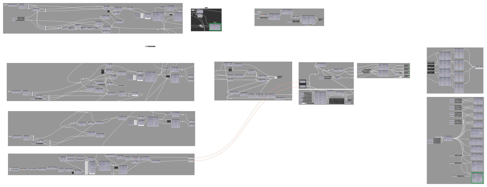

A single Grasshopper definition that takes a triangulated copper-panel canopy from geometry straight to labeled, ready-to-cut sheets, for a bus station under construction in Bishkek.

A triangulated copper canopy means hundreds of uniquely-shaped panels, and that normally means three separate handoffs: one model for the form, a second pass to nest the panels onto stock sheets, and a third round of manual labeling so the fabricator knows which cut panel goes where on the building.
One Grasshopper definition that stays a single script end to end: it generates the canopy's triangulated geometry, nests the panels onto cutting sheets, and labels every panel with its own position code, roof zone, row, column, left or right pair, then exports per-layer lines ready to hand straight to the cutter. Nothing gets redrawn or relabeled by hand between the model and the fabricator.




Internal tool, built for this project's fabrication pipeline.
Checked against the real triangulated canopy geometry for this project, not a synthetic test case: every panel in the cutting layout carries a position code that traces back to its exact spot on the roof.
A physical mockup is next, followed by real construction. The same script that placed the panels is the one handing the cutter their sheets, with the marking already on them.